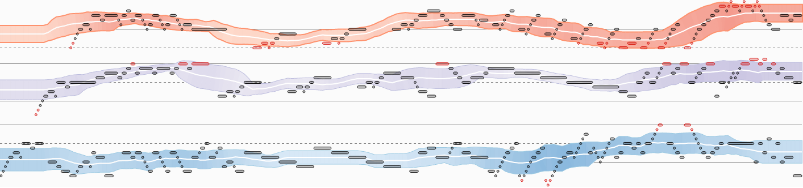
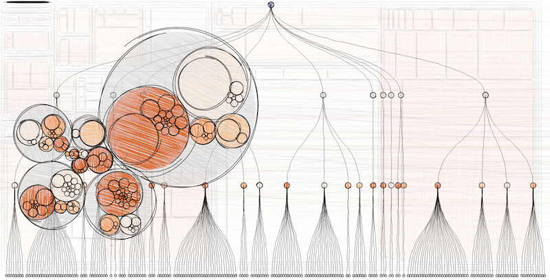
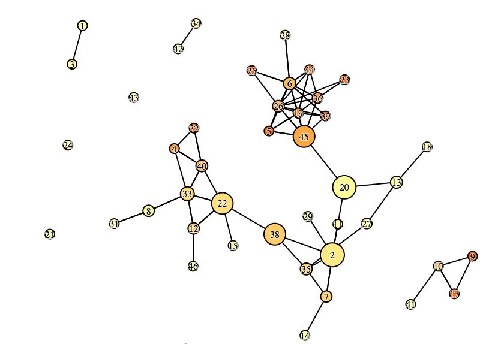
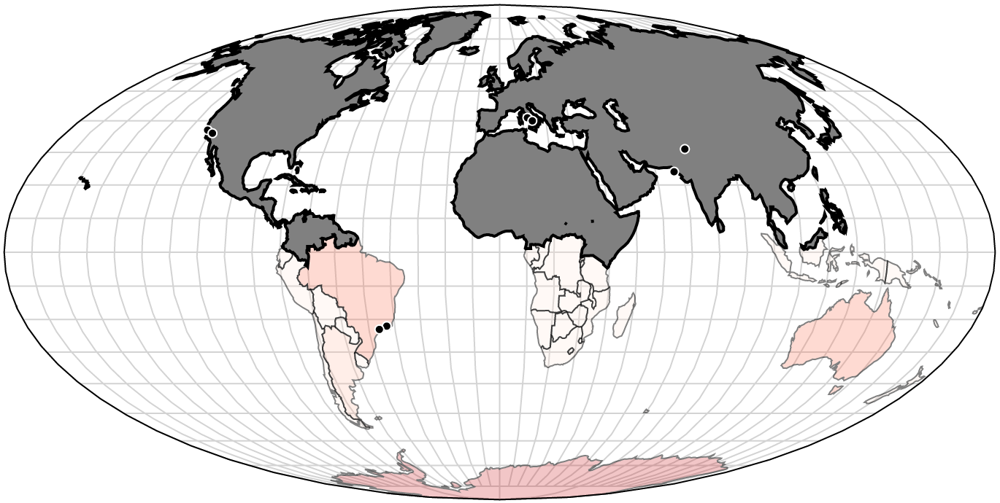
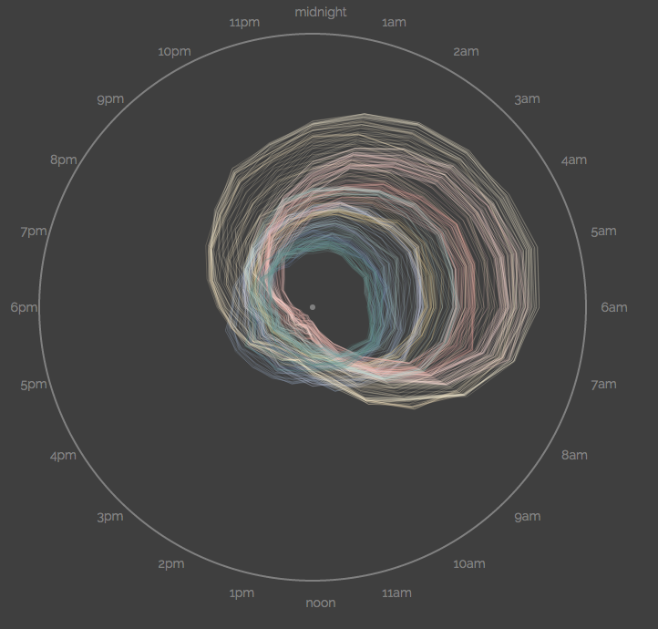

From the original site
This archived piece preserves its original text and historical context.
Complex Data Visualization with D3
Purchase Ticket
Date: November 7-8
Location: Mountain View, CA
Price: $650
20 slots available
Who Would Benefit From this Bootcamp: This is not a beginner level course on D3. Participants who will receive the most benefit will have had experience with D3 and understand data binding, layouts, axes and transitions.
Structure: The boot camp will be split into five sections. Each section is described below with a brief description of the aspects of D3 covered. Sections consist of brief lectures about D3 functionality, followed by examination of interactive examples. You can see some of the interactive material used in these sessions in this presentation on network data visualization. Participants will be provided the opportunity to follow along with coding examples, and brief Q&A sessions will allow for focus on specific aspects of the code.
Takeaways: After attending this bootcamp, a participant will be able to use any of the core D3 layouts to create data visualization products that effectively utilize color, shape, animation and interactivity. Along with generic data visualization built with geometric primitives, the participants will also have an advanced understanding of D3’s geographic and network visualization capabilities, as well as custom data visualization from a holistic perspective. Because effective use of complex data visualization requires a firm understanding of data processing, participants will also come away with a strong grasp of D3’s data processing functions.
Instructors: Elijah Meeks & Zan Armstrong
Elijah is the author of D3.js in Action. He works at Netflix as a Senior Data Visualization Engineer and before that worked at Stanford using D3 to create works such as ORBIS and Kindred Britain. Examples of his work with D3 can be seen on his blocks.
Zan loves using math and D3 to draw with data. She was formerly a high school math teacher in Maine and a data analyst at Google, and is now a software developer at Desmos.com. For more, check out http://blog.zanarmstrong.com/about/.
Day 1

Fundamentals
(1 hour)
A fast overview of the basic functions of the D3 library. This will cover the principles of data binding, scales, color, time and other aspects of D3 that factor into every data visualization product. This is not a beginner level class, so this overview will not spend enough time on these functions to take a student with no experience and leave them prepared for the rest of the course. It will help fill in valuable core concepts that many D3 users might not yet have run across.
Units
- Data-binding
- Color
- Scales
- Generators
- Components
- Behaviors
- Time

Hierarchical Data Visualization
(2 hours)
Many of the most useful charts are designed for hierarchical, or nested, data. This section will focus not only on learning when to use particular hierarchical layouts, such as treemaps, dendrograms or circle-packing, but also how to transform tabular data into hierarchical data. Along with creating layouts, methods for zooming and interacting with the layouts will be demonstrated.
Units
- d3.nest
- Threshold/Quantize/Quantile for Numerical to Categorical
- Dendrogram
- Partition/Sunburst
- Treemap
- Circle-Pack
- Click-to-Zoom
- Design for Hierarchical Data Visualization

Network Data Visualization
(3 hours)
Network data visualization is one of the most challenging and impressive forms of data visualization. This section will primarily focus on using force-directed networks to represent network data but will also show static layouts such as arc diagrams. It will also cover flow visualization using sankey and chord diagrams.
Units
- Network Data Fundamentals
- Creating/Transforming Network Data
- Static Network Visualization
- Force-Directed Network Creation
- Basic Force-Directed Network Interaction
- Interactive Creation, Deletion and Modification
- Drawing Complex Edges
- Integrating Network Statistics
- Sankey Diagrams
- Chord Diagrams
Day 2

Geographic Data Visualization
(3 hours)
This section will deal with the robust geospatial functionality available in D3. There will be an overview of finding and working with geospatial data to get it into shape for D3. The creation of vector maps with SVG, working with topojson, understanding projections, cartograms and creating tile maps will also be covered.
Units
- Finding & Prepping Geodata
- 40,000 Foot GIS Overview
- Basic D3 Map Creation
- Understanding Projection
- Zoom and Pan a Map
- Canvas Rendering
- Working with TopoJSON
- Mixed-Mode Rendering
- Hexbins
- Continuous Area Cartograms
- Tile-mapping with d3.geo.tile()

Drawing with Data: Creating Custom Visualizations with D3
(3 hours)
With D3, you're not confined to a preset collection of charts. You can use data to draw anything you want with the building blocks of rectangles, circles, ellipses, lines, polylines, polygons, and paths. This is an incredible opportunity, but starting with a blank slate can be intimidating. How do you turn a sketch into the core functions which transform data into shapes?
During this section we'll focus on writing custom D3 code. You'll learn to identify, interpret and create the functions that take in data and return the key attributes defining shapes.
Come prepared to analyze/dissect existing code, sketch on paper, write code, give and receive help, and solve problems.